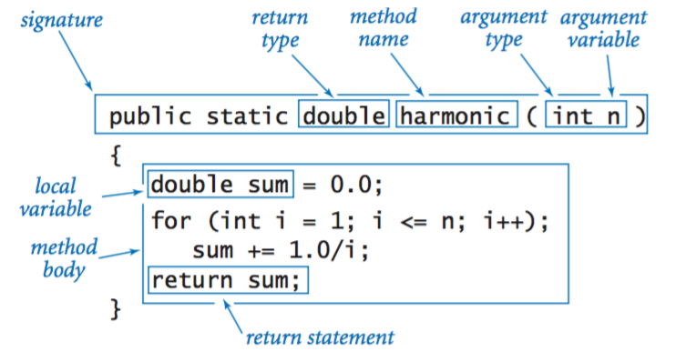

CS2 — Unit 2 Chapter 2: Void Methods
Let's review the structure of a method:

You've been writing methods that hand back a value, so main can decide what to do with it — print it, store it, use it in more math. Sometimes you don't need anything handed back. If all a method needs to do is perform an action — like printing something formatted a certain way — there's nothing to return.
That's a void method.
1. Same Idea, No Output
Compare two versions of "square something":
// Returns a value — the caller decides what to do with it
public static int square(int n) {
return n * n;
}
// void — just does the printing itself, hands nothing back
public static void printSquare(int n) {
System.out.println(n * n);
}
System.out.println(square(5)); // caller prints it
printSquare(5); // method prints it directly — same output, different approach
The word void where the return type goes means "nothing comes back." There's no return statement needed (though a bare return; with no value is legal, to exit early) — the method just runs its code and control returns to the caller when it hits the closing }.
| Part | Example | Meaning |
|---|---|---|
| Access modifier | public |
Visible to the whole program |
static |
static |
Belongs to the class, not an object |
| Return type | void |
Nothing comes back |
| Method name | printSquare |
What you call it |
| Parameter list | int n |
Input(s), same as any other method |
| Body | { ... } |
The code that runs |
2. Parameters Work Exactly the Same Way
Void methods take parameters exactly like methods that return a value — nothing changes about how inputs work, only about what comes out the other side.
public static void printMultiples(int n, int count) {
for (int i = 1; i <= count; i++) {
System.out.println(n * i);
}
}
Calling it:
Everything you already know still applies: arguments map to parameters in order, primitives are passed by value, and parameters are local to the method.
3. When to Reach for void
Use a return value whenever a method computes something the caller needs to use, store, or pass along. Use void when the method's entire job is an action with nothing left to hand back — most commonly, printing.
public static void printBanner() {
System.out.println("==========");
System.out.println("Welcome!");
System.out.println("==========");
}
public static void printBox(int size) {
for (int row = 0; row < size; row++) {
for (int col = 0; col < size; col++) {
System.out.print("* ");
}
System.out.println();
}
}
Neither of these computes a value worth handing back — their whole purpose is what they print. That's the signal to make them void.
4. How Method Calls Work
When Java reaches a method call — void or not — it pauses the current method, jumps to the called method and runs it, then returns to where it left off.
public static void main(String[] args) {
System.out.println("Before");
printBanner();
System.out.println("After");
}
Output:
5. Common Errors
| Error | Problem | Fix |
|---|---|---|
int x = printSquare(4); |
Void methods produce no value to store | Either make the method return a value, or don't try to capture one |
System.out.println(printBanner()); |
Same issue — trying to use a void call as if it were a value | Just call printBanner(); on its own line |
Forgetting parentheses: printBanner instead of printBanner(); |
Won't compile | Always include () when calling |
printMultiples(4) when the method needs two params |
Compile error | Supply all required arguments |
Check Your Understanding
Information
Unit 2 · Chapter 2: Void Methods
- What does
voidmean in a method header? - Rewrite this returning method as a void method that prints its result directly instead:
- Predict the output.
- Why can't you write
int x = printBanner();? - Write a void method
printLinethat takes anint nand aString ch, and printschrepeatedntimes followed by a newline.printLine(4, "p")should printpppp.
Answer Key
- The method performs an action but does not return a value to the caller.
-
- Output: -printBanner is void — it never produces a value, so there's nothing for x to store.
-
Homework 6: Void Methods
Attention
Unit 2 · Chapter 2 Homework
Part 1: Return Value or Void?
For each task, decide whether the method should return a value or be void, and say why.
- A method that computes the area of a circle.
- A method that prints a row of stars.
- A method that checks whether a number is prime.
- A method that prints a formatted receipt given a price and a quantity.
Part 2: Reading and Predicting
- What does the following method do? Describe it in one sentence.
- What would
printStars(4)display? - Predict the output.
Part 3: Local Scope Check
- Will this code compile? Explain why or why not.
Part 4: Write the Method
-
Write a void method
printBoxthat takes anint sizeand prints a filled square of*characters.printBox(3)should print: -
Write a
mainmethod that callsprintBoxwith sizes 2, 4, and 2, with a blank line between each box.